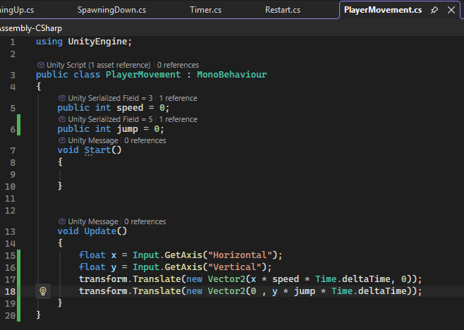
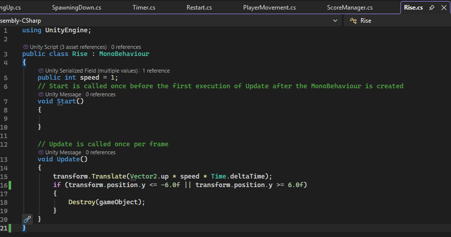
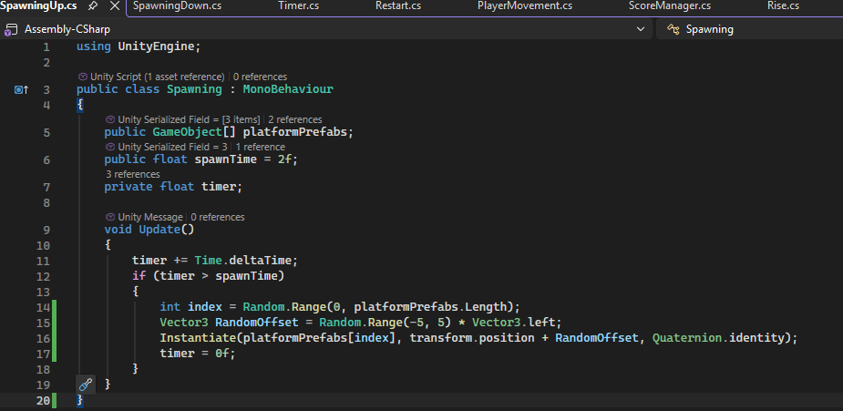
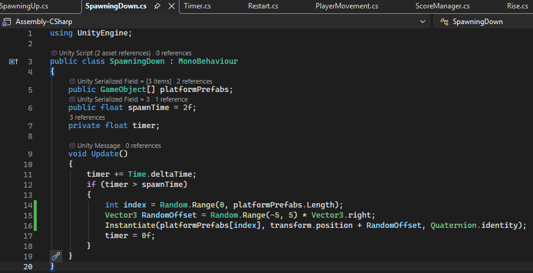
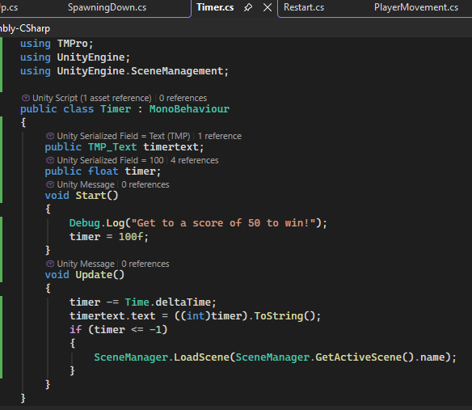
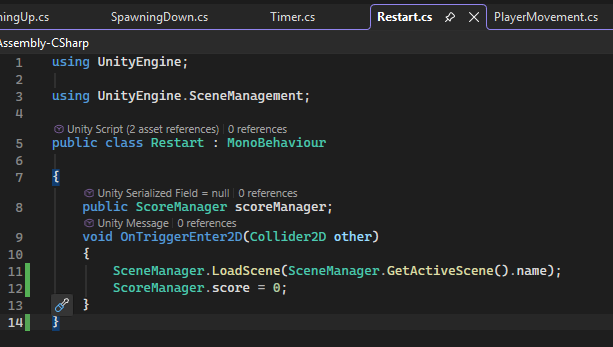
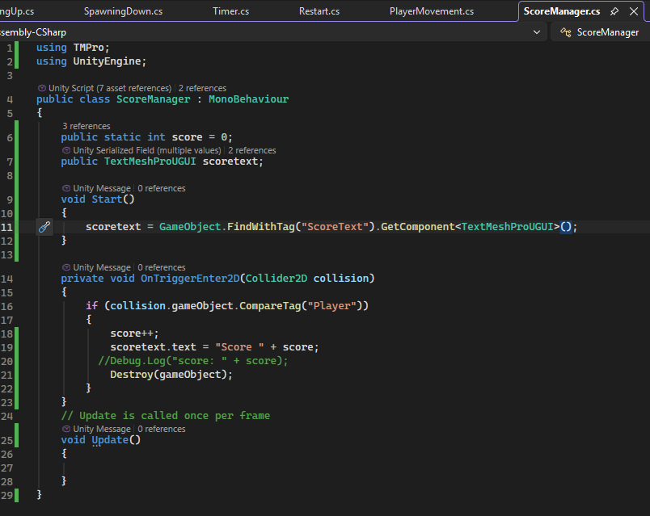

2D Endless Faller
A ball that has to survive 90 seconds hopping between platforms. Some rise, some sink, so you have to plan each landing.
Controlling the player
The player moves on the x and y axis, translated from the key being pressed: left, right, jump or fall. Putting it in Update lets it check every frame whether the key is down. These keybinds are well known from other games, which makes it accessible to the player.

Moving platforms
A public integer for speed, which can be modified in the Inspector. It's multiplied by Vector2 and by time to create distance, and if that takes the platform out of bounds the platform is destroyed.

Spawning platforms up and down
The platform prefabs are a public GameObject array so they can be dragged into the Inspector. As long as the timer is higher than the spawn time (2 seconds) it creates a platform at a random offset between -5 and 5, then resets the timer. The speed is positive going up and negative going down.


Timer
Starts at 100 and subtracts 1 each second with Time.deltaTime. A public text shows the player how long they have left. If the player dies the game restarts and so does the timer.

Restart
If the player touches an out-of-bounds trigger the active scene reloads and the score resets to zero.

Scoreboard
Score starts at 0 and goes up by 1 for each platform the player touches, shown on screen through the text.

Typed up: Spawning.cs — a platform every two seconds
using UnityEngine;
public class Spawning : MonoBehaviour
{
public GameObject[] platformPrefabs;
public float spawnTime = 2f;
private float timer;
void Update()
{
timer += Time.deltaTime;
if (timer > spawnTime)
{
int index = Random.Range(0, platformPrefabs.Length);
Vector3 RandomOffset = Random.Range(-5, 5) * Vector3.left;
Instantiate(platformPrefabs[index], transform.position + RandomOffset, Quaternion.identity);
timer = 0f;
}
}
}- →A timer that fills up with Time.deltaTime, picks a random prefab and a random sideways offset, spawns it, and starts counting again. The same pattern spawns the pipes in Flappy Bird.